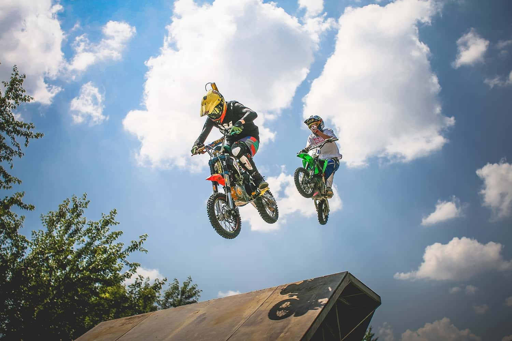

Extreme Sports: Pushing the Limits

"Fear is just an illusion. Once you conquer it, adventure begins!"
Extreme sports are not just about adrenaline; they represent the spirit of adventure and the will to challenge the impossible.
Whether it's jumping out of an airplane, racing down a mountain trail, or performing breathtaking stunts on a dirt bike, extreme
sports push the boundaries of human endurance and skill.
Engaging in extreme sports is an invitation to embrace the extraordinary and face challenges head-on. These activities test not only physical strength and skill but also mental resilience and determination. The rush of adrenaline is matched by the satisfaction of overcoming fears and achieving feats that once seemed unattainable.
Beyond the personal thrill, extreme sports foster a sense of community among adventurers, united by their shared passion for pushing boundaries and exploring the limits of possibility. Whether it's scaling towering cliffs, conquering wild waves, or navigating treacherous terrain, extreme sports provide a platform to celebrate the unyielding human spirit and inspire others to dare greatly.
Types of Extreme Sports
- Air Sports – These high-adrenaline activities involve aerial maneuvers, freefalls, and mastering the art of flight.
- Skydiving – Experience freefall from high altitudes before deploying a parachute for a safe landing.
- Base Jumping – A more extreme version of skydiving, involving jumps from buildings, cliffs, or bridges.
- Wingsuit Flying – Glide through the air at high speeds using a specialized jumpsuit with wing-like fabric.
- Water Sports – These sports take place on or beneath the water, requiring skill, balance, and endurance.
- Scuba Diving – Explore underwater ecosystems, coral reefs, and shipwrecks while using specialized breathing equipment.
- Big Wave Surfing – Ride towering ocean waves, often exceeding 20 feet, requiring precision and courage.
- Whitewater Rafting – Navigate turbulent river rapids with teamwork and paddling expertise.
- Land Sports – These activities challenge athletes on rugged terrains, steep cliffs, and urban environments.
- Rock Climbing – Scale natural rock formations or artificial climbing walls using strength and technique.
- Mountain Biking – Ride specialized bikes through rough trails, steep descents, and challenging obstacles.
- Parkour – An urban sport that involves running, jumping, and climbing obstacles with fluid movements.
Comparison of Popular Extreme Sports
| Sports |
Location |
Risk Level |
Required Equipment |
| Skydiving |
High |
Parachute, Altimeter, Jumpsuit |
| Scuba Diving |
Moderate |
Oxygen Tank, Wetsuit, Fins |
| Rock Climbing |
High |
Ropes, Harness, Carabiners |
| Mountain Biking |
Moderate |
Helmet, Bike, Gloves |
Popular Extreme Sports
-
Skydiving: Experience the thrill of freefall while mastering techniques like stable body positioning and parachute deployment. Emphasize safety protocols to ensure smooth, adrenaline-filled jumps.
-
Rock Climbing: Explore various styles, including free soloing (climbing without ropes), bouldering (short, challenging routes), and alpine climbing (tackling high-altitude peaks), each offering unique physical and mental challenges.
-
Surfing: Ride massive waves while refining advanced maneuvers like cutbacks and aerials. Focus on balance, timing, and understanding ocean conditions for a thrilling and rewarding experience.
-
Snowboarding: Develop skills in tricks like grabs and spins, compete in freestyle events, or embrace backcountry adventures for off-piste excitement and breathtaking mountain views.
Popular Extreme Techniques
-
Base Jumping: This extreme sport involves leaping from high altitudes such as cliffs or buildings. Precision in timing, body positioning, and parachute deployment is crucial for safety. Comprehensive training and adherence to safety protocols minimize risks.
-
Paragliding: Master the art of controlling flight by navigating air currents with finesse. Techniques like weight shifting and brake control ensure smooth gliding and maneuverability. Understanding weather patterns enhances the paragliding experience.
-
BMX Biking: Perform stunts and tricks like tailwhips and bunny hops on challenging terrains. Focus on balance, agility, and practice to refine skills. Wearing protective gear ensures safety while pushing limits on ramps and tracks.
-
Ice Climbing: Scale icy terrains using specialized gear such as crampons and ice axes. Techniques like efficient footwork and body positioning help overcome icy challenges. Awareness of weather conditions and safety measures are vital in this demanding sport.
Adventure and Exploration
-
Exploring Extreme Sports Destinations: Discover thrilling spots like the Swiss Alps for snowboarding, Hawaii's North Shore for surfing, and the Norwegian fjords for base jumping. Each destination offers unique landscapes and challenges tailored to adrenaline enthusiasts.
-
Combining Sports with Eco-Tourism: Engage in adventures that promote sustainability, such as mountain biking through protected trails or kayaking in mangrove forests, while supporting local conservation efforts and eco-friendly practices.
-
Documenting Extreme Sports: Capture breathtaking moments through photography and videography using drones, action cameras, and high-speed lenses. Sharing these visuals raises awareness about the sport's appeal and the need to preserve natural environments.
Safety and Training
- Essential Gear for Extreme Sports Enthusiasts: Proper gear, such as helmets, harnesses, padded clothing, and specialized equipment (e.g., parachutes for skydiving or crampons for ice climbing), ensures safety and enhances performance during extreme sports activities.
- Training Programs: Beginners can start with structured courses that cover foundational skills and safety protocols, while advanced athletes can pursue specialized training to refine techniques and push their limits in specific sports.
- Managing Risks and Injuries: Risk management involves understanding environmental conditions, following safety guidelines, and practicing first aid. Athletes should maintain physical fitness to prevent injuries and seek professional assistance for recovery when necessary.
Cultural and Social Impact
- The Rise of Extreme Sports in Popular Culture: Extreme sports have gained prominence through media exposure, sponsorships, and events like the X Games, making them a cultural phenomenon celebrated worldwide.
- Influence on Youth and Lifestyle Trends: Extreme sports inspire younger generations, promoting active lifestyles, innovation, and self-expression through unique skills and styles.
- Promoting Mental Resilience: Engaging in extreme sports helps athletes build focus, adaptability, and mental toughness as they face challenges and overcome fear, fostering personal growth and confidence.
Exploring the Thrills of Extreme Sports
| Sport |
Description |
Skills Required |
Safety Gear |
| Skydiving |
Freefalling from an airplane and deploying a parachute to land safely. |
Courage, focus, stability |
Parachute, altimeter, jumpsuit, helmet |
| Rock Climbing |
Scaling natural rock formations or climbing walls using strength and technique. |
Strength, endurance, balance |
Harness, climbing shoes, helmet, ropes |
| Surfing |
Riding waves on a surfboard, often in unpredictable ocean conditions. |
Balance, agility, timing |
Surfboard, wetsuit, leash |
| Snowboarding |
Descending snowy slopes on a snowboard, often performing stunts. |
Coordination, strength |
Snowboard, helmet, goggles, gloves |
| Mountain Biking |
Navigating rugged trails on a bike, often at high speeds. |
Balance, stamina, agility |
Helmet, gloves, knee pads, elbow pads |
| Bungee Jumping |
Leaping from a great height while attached to a bungee cord. |
Courage, composure |
Harness, bungee cord |
| Whitewater Rafting |
Navigating fast-flowing rivers in an inflatable raft. |
Teamwork, strength, control |
Life jacket, helmet, paddle, wetsuit |
| Parkour |
Traversing urban or natural obstacles with fluid, acrobatic movements. |
Agility, strength, precision |
Suitable footwear, gloves (optional) |
Conclusion
Extreme sports embody the spirit of adventure, offering challenges that test physical limits, mental resilience, and courage. Each sport brings its own unique set of thrills—from the heart-pounding freefall of skydiving to the intense focus of rock climbing on sheer cliffs. For beginners, these experiences provide an exciting entry into a world of discovery, encouraging personal growth and confidence. For seasoned professionals, the pursuit of mastery continues to fuel their passion and push boundaries.
What makes extreme sports truly captivating is their ability to cater to diverse preferences and skill levels. Whether you’re seeking the serenity of gliding through the skies during paragliding or the adrenaline rush of taming colossal waves while surfing, there’s always a new frontier to explore. These sports also foster a deeper connection with nature, as participants engage with mountains, oceans, and landscapes in ways that are both exhilarating and humbling.
In conclusion, extreme sports are more than just high-octane activities; they are transformative journeys that inspire self-discovery, resilience, and a lifelong love for adventure. No matter where you stand on the spectrum of experience, there’s always an adventure waiting to challenge and excite you. Let me know if you'd like suggestions on specific sports or destinations to start your journey!🧗♂️🪂🏄♀️🚴♂️✨